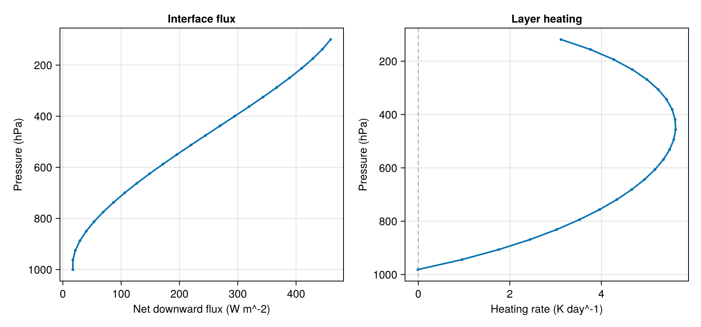

The staged interface: an ecCKD column, call by call
One radiation update in this package is staged: it is split into three explicit calls on caller-owned arrays — optical_properties! fills the g-point optics, radiative_fluxes! solves each stream's transport, and heating_rates! converts the flux convergence into a temperature tendency. Nothing is hidden inside a monolithic solver, and a host model can own, reuse, or replace any stage. This tutorial runs the three stages end-to-end on a tiny synthetic tabulated gas-optics model, so the documentation build needs no NetCDF data — but these are exactly the calls used by official ecCKD models loaded with read_official_ecckd_gas_optics.
using CairoMakie
using NumericalRadiation
day = 86_400 # s86400A top-down column
The $N$-layer column has interface pressures $pᵢ$ increasing from top of atmosphere to surface, layer pressures $p$ at their midpoints, and layer and interface temperatures $T$ and $Tᵢ$. Gas values in this minimal staged model are layer path amounts.
N = 24
pᵢ = collect(range(10_000, 100_000; length = N + 1))
p = 0.5 .* (pᵢ[1:end-1] .+ pᵢ[2:end])
T = collect(range(220, 295; length = N))
Tᵢ = collect(range(215, 300; length = N + 1))
atmosphere = ColumnAtmosphere(
pressure_layers = p,
pressure_interfaces = pᵢ,
temperature_layers = T,
temperature_interfaces = Tᵢ,
gases = (
h2o = collect(range(0.2, 2.2; length = N)),
co2 = fill(1, N),
),
surface = (temperature = Tᵢ[end],),
geometry = (cos_zenith = 0.55,),
)ColumnAtmosphere{Float64, Vector{Float64}, @NamedTuple{h2o::Vector{Float64}, co2::Vector{Int64}}, @NamedTuple{temperature::Float64}, @NamedTuple{cos_zenith::Float64}}([11875.0, 15625.0, 19375.0, 23125.0, 26875.0, 30625.0, 34375.0, 38125.0, 41875.0, 45625.0, 49375.0, 53125.0, 56875.0, 60625.0, 64375.0, 68125.0, 71875.0, 75625.0, 79375.0, 83125.0, 86875.0, 90625.0, 94375.0, 98125.0], [10000.0, 13750.0, 17500.0, 21250.0, 25000.0, 28750.0, 32500.0, 36250.0, 40000.0, 43750.0, 47500.0, 51250.0, 55000.0, 58750.0, 62500.0, 66250.0, 70000.0, 73750.0, 77500.0, 81250.0, 85000.0, 88750.0, 92500.0, 96250.0, 100000.0], [220.0, 223.2608695652174, 226.52173913043478, 229.7826086956522, 233.04347826086956, 236.30434782608697, 239.56521739130434, 242.82608695652175, 246.08695652173913, 249.34782608695653, 252.6086956521739, 255.8695652173913, 259.1304347826087, 262.39130434782606, 265.6521739130435, 268.9130434782609, 272.17391304347825, 275.4347826086956, 278.69565217391306, 281.95652173913044, 285.2173913043478, 288.4782608695652, 291.7391304347826, 295.0], [215.0, 218.54166666666666, 222.08333333333334, 225.625, 229.16666666666666, 232.70833333333334, 236.25, 239.79166666666666, 243.33333333333334, 246.875, 250.41666666666666, 253.95833333333334, 257.5, 261.0416666666667, 264.5833333333333, 268.125, 271.6666666666667, 275.2083333333333, 278.75, 282.2916666666667, 285.8333333333333, 289.375, 292.9166666666667, 296.4583333333333, 300.0], (h2o = [0.2, 0.28695652173913044, 0.3739130434782609, 0.4608695652173913, 0.5478260869565217, 0.6347826086956522, 0.7217391304347827, 0.808695652173913, 0.8956521739130435, 0.9826086956521739, 1.0695652173913044, 1.1565217391304348, 1.2434782608695651, 1.3304347826086957, 1.4173913043478261, 1.5043478260869565, 1.5913043478260869, 1.6782608695652175, 1.7652173913043478, 1.8521739130434782, 1.9391304347826086, 2.026086956521739, 2.1130434782608694, 2.2], co2 = [1, 1, 1, 1, 1, 1, 1, 1, 1, 1, 1, 1, 1, 1, 1, 1, 1, 1, 1, 1, 1, 1, 1, 1]), (temperature = 300.0,), (cos_zenith = 0.55,))A small tabulated gas-optics model
The element type is chosen once. The constructor stores the grids exactly as given (it does not convert them), so they are built as FT vectors:
FT = Float64
pressure_grid = FT[10_000, 100_000]
temperature_grid = FT[220, 300]
names = (:h2o, :co2)
function synthetic_absorption(ng, ngas, pressure_grid, temperature_grid; scale)
table = zeros(FT, ng, ngas, length(pressure_grid), length(temperature_grid))
for ig in 1:ng, j in 1:ngas, ip in eachindex(pressure_grid), it in eachindex(temperature_grid)
pressure_factor = pressure_grid[ip] / maximum(pressure_grid)
temperature_factor = temperature_grid[it] / maximum(temperature_grid)
table[ig, j, ip, it] =
scale * ig * (0.7 + 0.5 * j) * (0.4 + pressure_factor) *
(0.8 + 0.3 * temperature_factor)
end
return table
end
model = EcCKDTabulatedGasOpticsModel(;
names,
pressure_grid = pressure_grid,
temperature_grid = temperature_grid,
longwave_absorption = synthetic_absorption(2, 2, pressure_grid, temperature_grid; scale = 0.010),
shortwave_absorption = synthetic_absorption(2, 2, pressure_grid, temperature_grid; scale = 0.006),
shortwave_rayleigh_molar_scattering = [1e-7, 2e-7],
longwave_weights = [0.45, 0.55],
shortwave_weights = [0.55, 0.45],
)EcCKDTabulatedGasOpticsModel{Float64, (:h2o, :co2), Vector{Float64}, Vector{Float64}, Vector{Float64}, Vector{Float64}, Array{Float64, 4}, Array{Float64, 4}, Array{Float64, 4}, Array{Float64, 4}, Vector{Float64}, Vector{Float64}, Nothing, Nothing, Vector{Float64}, Vector{Float64}}([10000.0, 100000.0], [220.0, 300.0], Float64[], [0.0, 0.0], [0.0061200000000000004 0.00867; 0.012240000000000001 0.01734;;; 0.017136 0.024276000000000002; 0.034272 0.048552000000000005;;;; 0.006600000000000001 0.00935; 0.013200000000000002 0.0187;;; 0.01848 0.026180000000000005; 0.03696 0.05236000000000001], [0.003672 0.005202000000000001; 0.007344 0.010404000000000002;;; 0.010281599999999998 0.0145656; 0.020563199999999997 0.0291312;;;; 0.00396 0.005610000000000001; 0.00792 0.011220000000000003;;; 0.011087999999999999 0.015708; 0.022175999999999998 0.031416], Array{Float64, 4}(undef, 0, 0, 0, 0), Array{Float64, 4}(undef, 0, 0, 0, 0), [1.0e-7, 2.0e-7], [1.0, 1.0], nothing, nothing, [0.45, 0.55], [0.55, 0.45])Caller-owned work arrays
longwave = LongwaveOpticalProperties(
zeros(2, N),
zeros(2, N);
source_top = zeros(2, N),
source_bottom = zeros(2, N),
weights = zeros(2),
)
shortwave = ShortwaveOpticalProperties(
zeros(2, N);
rayleigh_optical_depth = zeros(2, N),
scattering_asymmetry = zeros(2, N),
weights = zeros(2),
)
optical_properties!(longwave, shortwave, model, atmosphere)
fluxes = RadiativeFluxes(
longwave_up = zeros(N + 1),
longwave_down = zeros(N + 1),
shortwave_up = zeros(N + 1),
shortwave_down = zeros(N + 1),
)
radiative_fluxes!(
fluxes,
CloudlessLongwave(),
longwave,
atmosphere,
LongwaveBoundaryConditions(
surface_longwave_up = surface_longwave_emission(model,
atmosphere.surface.temperature),
surface_albedo = 0,
),
)
radiative_fluxes!(
fluxes,
CloudlessShortwave(),
shortwave,
atmosphere,
ShortwaveBoundaryConditions(
toa_shortwave_down = 1361 * atmosphere.geometry.cos_zenith,
surface_albedo = 0.15,
),
)
Ṫ = zeros(N)
heating_rates!(Ṫ, fluxes, atmosphere; gravity = 9.80665, heat_capacity = 1004)
daily_heating_rate = day .* Ṫ
net_flux = fluxes.longwave_down .- fluxes.longwave_up .+
fluxes.shortwave_down .- fluxes.shortwave_up
println("TOA net flux: ", round(net_flux[1]; digits = 3), " W m⁻²")
println("Surface net flux: ", round(net_flux[end]; digits = 3), " W m⁻²")
println("Heating range: ",
round(minimum(daily_heating_rate); digits = 3), " to ",
round(maximum(daily_heating_rate); digits = 3), " K day⁻¹")TOA net flux: 459.227 W m⁻²
Surface net flux: 17.191 W m⁻²
Heating range: -0.008 to 5.623 K day⁻¹
Visualization
fig = Figure(size = (900, 420))
ax_flux = Axis(fig[1, 1],
xlabel = "Net downward flux (W m⁻²)",
ylabel = "Pressure (hPa)",
title = "Interface flux")
lines!(ax_flux, net_flux, pᵢ ./ 100; linewidth = 2)
scatter!(ax_flux, net_flux, pᵢ ./ 100; markersize = 5)
ax_flux.yreversed = true
ax_heat = Axis(fig[1, 2],
xlabel = "Heating rate (K day⁻¹)",
ylabel = "Pressure (hPa)",
title = "Layer heating")
lines!(ax_heat, daily_heating_rate, p ./ 100; linewidth = 2)
scatter!(ax_heat, daily_heating_rate, p ./ 100; markersize = 5)
vlines!(ax_heat, [0]; color = (:gray50, 0.5), linestyle = :dash)
ax_heat.yreversed = true
function docs_asset_dir()
repo_docs_src = normpath(joinpath(@__DIR__, "..", "..", "docs", "src"))
path = if isdir(repo_docs_src)
joinpath(repo_docs_src, "assets")
else
normpath(joinpath(@__DIR__, "..", "assets"))
end
mkpath(path)
return path
end
save(joinpath(docs_asset_dir(), "staged_ecckd_column.png"), fig)The documentation build writes this image under docs/src/assets.

Official ecCKD files can be used in the same staged calls once available. The only replacement is the model = ... block above; the atmosphere, work arrays, fluxes, boundary conditions, and heating conversion stay the same.
This page was generated using Literate.jl.